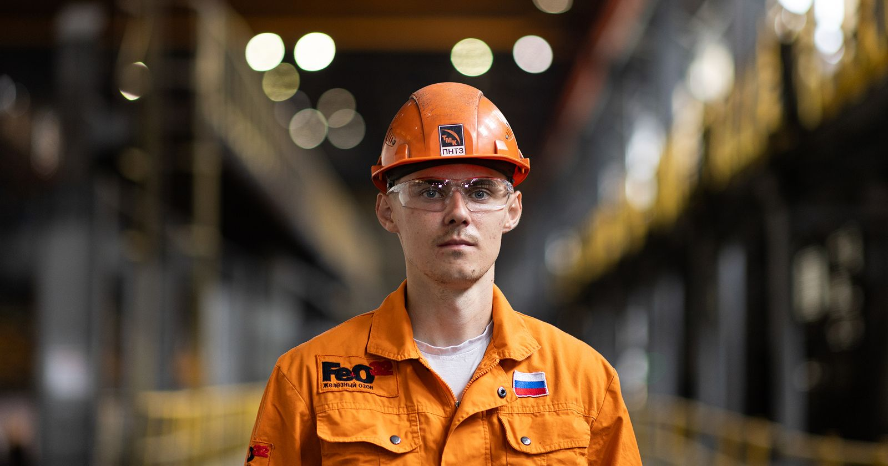
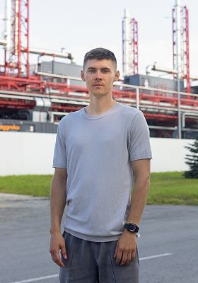
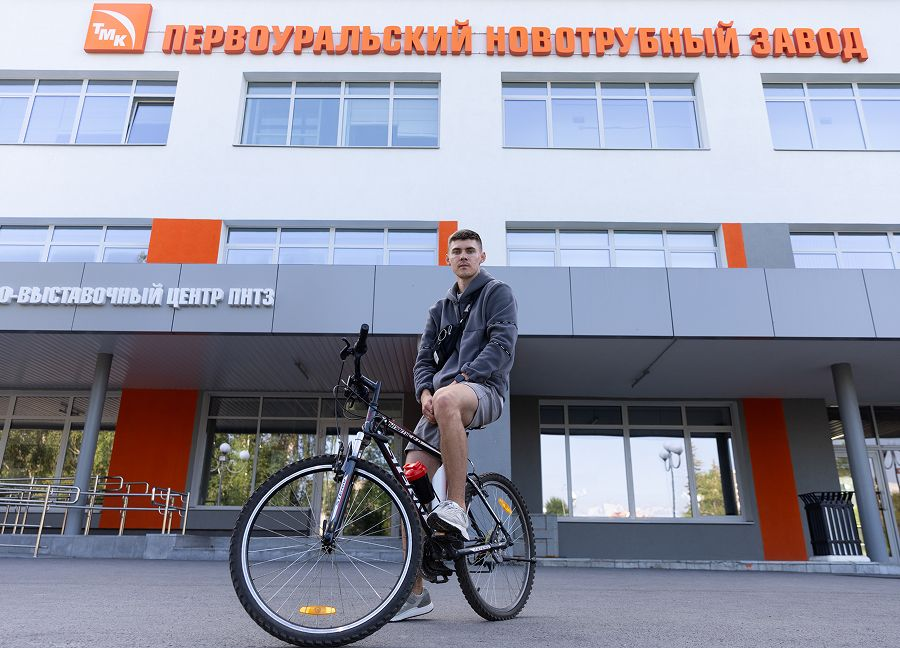
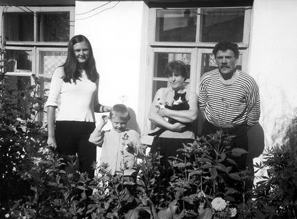
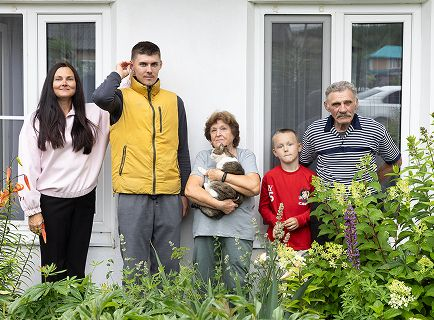

Кирилл Сергеевич Богданов
Кирилл Сергеевич Богданов
{kind=link}

Кирилл Сергеевич БогдановДата рождения: 31.12.1996. Работает машинистом крана металлургического производства в электросталеплавильном цехе №23. Общий стаж – девять лет. За безупречный труд не раз награждался почетными грамотами завода.
Если Александр Николаевич очень похож на своего отца Николая Ивановича, то Кирилл – копия деда, особенно на детских и юношеских фотографиях. «Я и сам это заметил недавно и прямо обалдел. Просто один в один». Но, кажется, связь между Александром Николаевичем и внуком простирается далеко за пределы внешнего сходства. «Если что случилось, нужна помощь, дедушка звонит мне. Не маме, своей дочери, а внуку».

 Кирилл
Кирилл Богданов
Я работаю в сталеплавильном цехе, то есть там, где рождается заготовка, раскаленный металл. Я машинист крана. Изначально пришел в цех штабелировщиком металла, стропальщиком, грубо говоря. Через какое-то время позвали работать на кране, меня это увлекло. Отучился полгода, и вот уже четыре года я — машинист. Обучение оказалось несложным. Вообще, оно рассчитано на полгода, но сотрудников было немного, и я уже через три месяца был готов к работе. Хотя, понятное дело, от учителя многое зависит. Мне повезло: учитель оказался молодым, мы с ним были на одной волне.
Работа, конечно, непростая. Заготовка-то горячая, идет излучение, кабина нагревается. Взять то же лето — невероятно жарко. Плюс ночные смены – тяжеловато приходится. На завод попал не потому, что прямо с самого начала только туда стремился. Хотя, когда мама рассказывала про железнодорожные пути, про краны, это для меня, как для обычного ребенка, было все вау-вау. Это только потом, когда я стал учиться, взгляд на жизнь стал более трезвым, прагматичнее что ли.
Город у нас небольшой, развита металлургия, так что альтернатив не так уж много. Я поступил в металлургический колледж, тем более он был бесплатный. Да и мама сказала поступать туда. Выучился на технолога за четыре года. Прошел практику, начал думать, куда поступить, чтобы получить высшее образование. В итоге выбрал ту же специальность, потому что были бюджетные места. А потом начались поиски своего места. Друзья, которые на заводе работали, звали к себе. Мол, и зарплата в сталеплавильном цехе высокая по сравнению с другими цехами. Так я и оказался на заводе. Мама, кстати, на мой выбор не давила. Поддержала бы, даже если бы я нашел другое место работы.
{kind=link}

Описание фото
 Александр
Александр Поваляев
Мне понравилось, что внук на завод пошел. Не в какую-то там шарагу, не продавцом в ларек какой-нибудь, куда вся молодежь метит. Все по порядку: колледж закончил, образование получил. Токарем практику проходил, общались с ним на эту тему. За советом обращался. Ничего там, говорю, страшного. Потом институт закончил, попробовал себя по специальности, которую получил. Не пошло. Там все компьютеры, компьютеры. Сидячая работа – это очень плохо. Вот, перешел в литейное производство. Сперва под краном стоял, как я и мой отец, его прадед. Но Кирилл потом сдал экзамен на крановщика и стал машинистом.
Кирилл Богданов
Я, конечно, знал, что вся семья работала на заводе, но то, что у нашей трудовой династии такой огромный стаж, как-то даже не осознавал. Только лет пять назад стал понимать масштабы, когда мама занялась составлением генеалогического древа. Прикольно, конечно, почувствовал гордость за свою семью. Попутно узнал много новых родственников. С кем-то был знаком, с кем-то познакомились в процессе семейных сборов, когда встречались в родовом доме.
Думаю, что-то и во мне от Поваляевых есть. Никогда не откажу в помощи, как, кстати, и дедушка мой. Он всегда помогает. Допустим, ездили с друзьями недавно на сплав, попросил у него лодку. Он только новую купил, но без проблем отдал на три дня. Так и я: если он у меня что-то попросит, всегда готов ему помочь.
Еще наша семейная черта – это ответственность. Вот недавно сплавлялись с друзьями. А у меня была цель побыстрее доплыть, потому что нужно было раньше уехать. Все расслабились, пиво пьют. Греб, в общем, за себя и за тех троих, что со мной были. Потому что пообещал быть в назначенное время, значит, надо быть.
{kind=link}
{kind=link}
{kind=link}
{kind=link} Александр
Александр Поваляев
Кирилл с двоюродной сестрой Джансу постоянно у нас дома были. Грамотный парнишка. Хулиганом не был. Что скажешь, все выполнял. Даже в подростковом возрасте. Не раз встречались с ним потом на поле, картошку убирали. Плохого о нем ничего не скажу.
Кирилл Богданов
В чем секрет Поваляевых? Наверное, отчасти дело в советской закалке, в воспитании той эпохи. Это люди с лопатой. Оттуда и сил столько. Поваляевы трудолюбивые, но при этом не строгие, семейные, чтят кровные узы. Обязательные – это правда, мы всегда держим слово. А вообще, наверное, со стороны виднее, какие мы.
Когда в последний раз был у тети Нади в родовом доме, особые эмоции испытал. Как она вышла на крыльцо. Всегда добрая, ласковая. У нее и самовар для нас всегда готов. Чаю там попьешь, воспоминания накатывают. Тетя Надя истории рассказывает. Раньше-то всей большой семьей там собирались.
{kind=link}
{kind=link}
{kind=link}
{kind=link}
{kind=link}
 Надежда
Надежда Шавкунова
(Поваляева)
Из молодых Кирилл – самый поваляевский. Скромный, вежливый, всегда помогает: частенько тут картошку сажает. Хороший мальчик, очень хороший.
Александр Поваляев
На рыбалку с ним постоянно ездили. Причем довольно-таки далеко, ночевали там на берегу. Азарт у него был такой, что не оторвать. Кто лучше рыбачит? Оба нормально. Главное, чтобы клевало, хе-хе.
 Ольга
Ольга Поваляева
Поехали мы как-то с друзьями в поход. И Кирилл с нами, маленький еще. Говорит, хочу рыбачить. Окей, пошли утром на рыбалку. Открываю баночку, а там эти опарыши. Кирилл отпрянул: я это руками трогать не буду. Пришлось мне трогать, как заядлому рыбаку в детстве, ха-ха.
А вообще у него главное увлечение – футбол, хоккей. В футбол они с ребятами даже в валенках играли.
{kind=link}
{kind=link}
{kind=link}
{kind=link} Кирилл
Кирилл Богданов
Можно сказать, что спорт – мое главное хобби. У нас на предприятии проводятся спартакиады, так я во всем стараюсь участвовать. Хоккей, футбол – все это умею, все мое. На спартакиаде выигрывал в прыжках с места. Я ведь высокий, худой, хорошо прыгаю. Может, и профессионально мог бы заниматься. Назовем это ошибкой родителей. Надо было сразу меня в спорт отдать, тогда что-нибудь и получилось бы. Тот же хоккей с мячом, который у нас в городе очень популярен. Сейчас-то уже поезд ушел.
А так я, получается, самоучка. У нас, кажется, до сих пор такое есть. В каждом районе – дворовый клуб. Туда можно записаться абсолютно бесплатно и разными видами спорта заниматься. И вот эти дворовые клубы между собой соревновались. Не знаю, как сейчас, а раньше еще и форму выдавали.
В футболе особо ни за кого не болею. Может, за екатеринбургский «Урал» немного. ТМК иногда организует бесплатные поездки на матчи. А вообще стараюсь следить за мировым футболом, хоккей тоже смотрю.
Я вообще по натуре человек спокойный, но в футболе азарт просыпается. Даже жена со стороны говорит, что иногда иду в подкат, не задумываясь о последствиях. В то же время вывести меня из себя очень трудно. Иногда анализируешь моменты, когда ребята из моей команды или соперники выходят из себя, и думаешь: я бы в такой ситуации сдержался.
Есть еще одно увлечение, к которому, правда, в последнее время душа не лежит. У меня же есть художественное образование. Я с самого детства рисовал. Мама как-то спросила: хочешь в художественную школу? Конечно, хочу. Пошел с радостью. Очень там нравилось. Заканчивал художку, потом ходил на дополнительные курсы по рисунку и скульптуре. У меня и мольберт был, но сейчас я его бабушке отдал, она живописью тоже увлекается.
Почему у меня душа уже к живописи не лежит? В моменте перестал ходить в художку, надо было думать, чем заниматься дальше. Мама посоветовала попытать счастья в металлургии. Может, потому так и получилось. Иногда представляю, как беру кисти, краски и понимаю – неохота. Возможно, если бы дальше по этой линии пошел и отучился на дизайнера или архитектора, все сложилось бы иначе. Но я все еще ищу себя. Есть мысли попробовать себя в татуировке. Только в Первоуральске этому не учат, так что надо искать место в Екатеринбурге. Если выучусь, первую татуировку набью жене. Она, правда, пока не знает, какую хочет. Но время у нее еще есть.
Люблю проводить свободное время с дочкой. Мне с ней нравится. От супруги только и слышу – «золотой папа». Рабочий график позволяет уделять внимание семье.
{kind=link}
{kind=link} Ольга
Ольга Поваляева
Сын – очень порядочный по отношению к своей семье, честный, такой же, как мой отец, его дедушка. Мой отец тоже много времени проводил со мной, прямо как сейчас Кирилл – с дочкой.
Кирилл Богданов
Еще про семью расскажу. У моей жены Насти мама тоже на заводе работает. Причем они сидят на одном этаже с моей мамой. Оказывается, у них тоже трудовая династия, и в 2016-м они, так же, как и мы, выигрывали заводской конкурс династий. У них, конечно, не такой большой общий стаж, но все же. Еще интересно, что у тещи есть две сестры, с одной из них она близняшка. И у моей матери тоже две сестры близняшки! Удивительно, что так много схожего.
С Настей, кстати, интересно познакомились. Было такое приложение – «Перископ». Выходишь в прямой эфир, а люди, которые по геолокации рядом, подписываются. И вот мы с друзьями катались по Екатеринбургу вечером, дай, думаю, выйду в этот «Перископ». Вышел, а мы как раз проезжали мимо общежития, где Настя жила.
Я вышла в эфир, а он всех друзей показывает, кроме себя. Попросила показать: лицо такое знакомое оказалось. А потом поняла, что видела его на чьей-то фотографии, и мы с подругой обсуждали, мол, у нее кроссовки такие же, как у него. Еще подумала тогда: такой красивый мальчик никогда не будет со мной. И вот мы уже шесть лет в браке.
{kind=link}
{kind=link}
{kind=link}
{kind=link}
Александр Поваляев 


Ольга Поваляева


Ольга с зонтом на аллее около ж/д станции, 2025 год